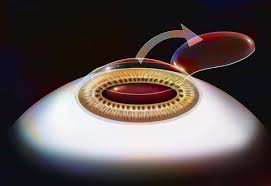
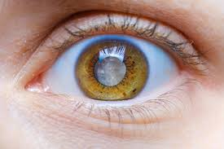

Welcome to VisionCare Surgical Center
Providing world-class medical and surgical ophthalmology care in Berkshire. Specializing in refractive cataract surgery and laser vision correction.
Surgery is performed at our state-of-the-art clinic, dedicated exclusively to eye procedures. Our team combines advanced technology and compassionate care to ensure optimal outcomes.
Explore Our ServicesLasik
Refractive
Cataracts
Frequently Asked Questions
What is LASIK?
LASIK is a type of refractive surgery for the correction of myopia, hyperopia, and astigmatism.
What is refractive cataract surgery?
Refractive cataract surgery is a procedure to remove the natural lens of the eye and replace it with an artificial lens to improve vision.
How long is the recovery time?
Recovery time can vary, but most patients resume normal activities within a few days.